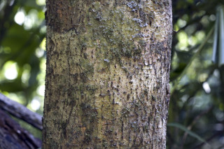
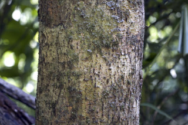
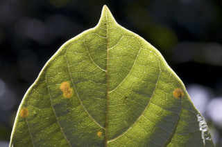
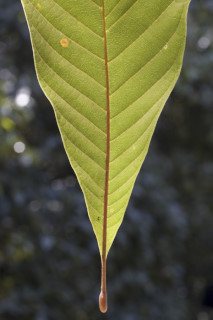
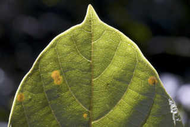
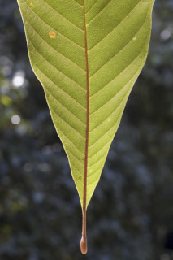
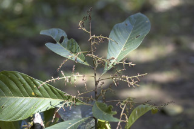
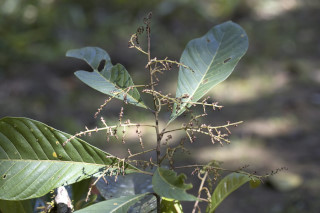

| Leaves : | Leaves simple , alternate , spiral ; petiole 1.5-3.5 cm long, planoconvex in cross section, glabrescent when young, swollen at base; lamina 10-30 (50) x 3-10 (-18) cm, oblanceolate to narrow obovate , apex shortly acuminate , base cuneate - attenuate , margin entire , sometimes remotely dentate in saplings, chartaceous , puberulous when young, later glabrous , drying brown; midrib nearly flat above; secondary_nerves 14-18 pairs, often with hairy domatia in their axills; tertiary_nerves coarsely reticulate or obliquely reticulo-percurrent . |
 



 




 
